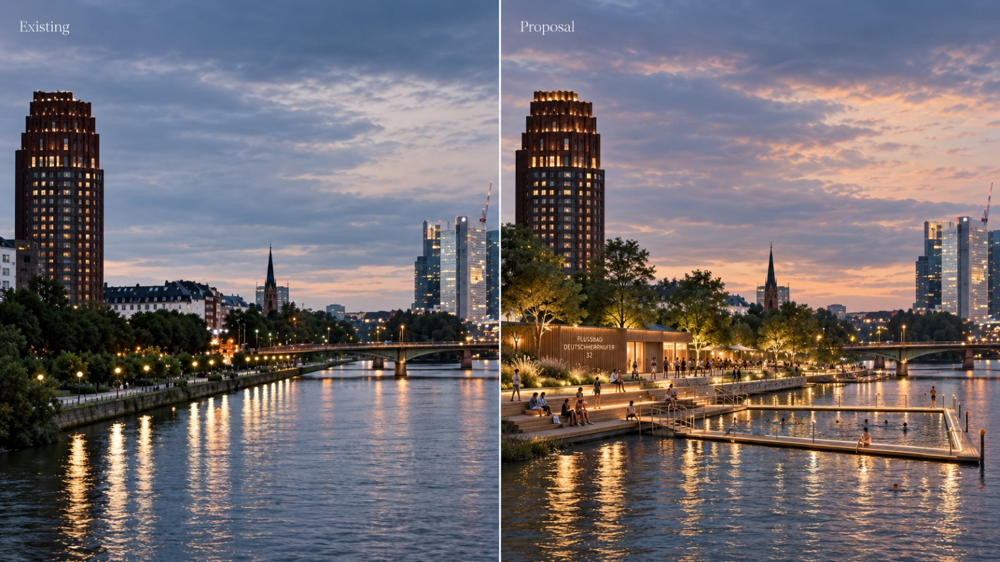
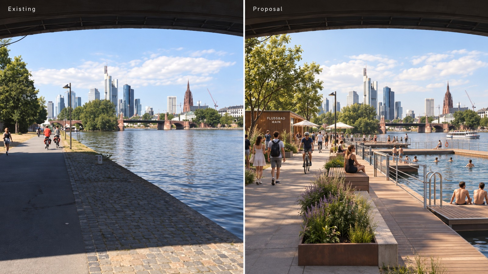
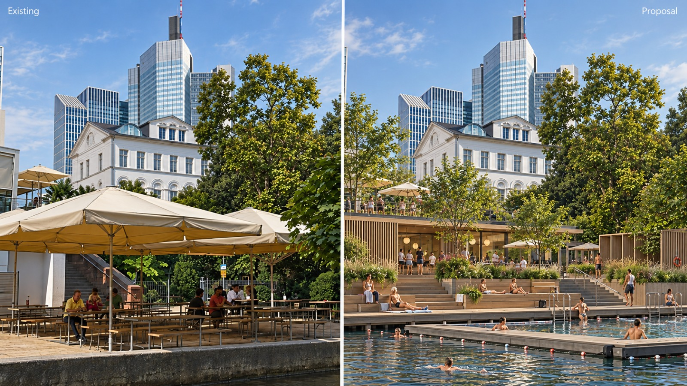
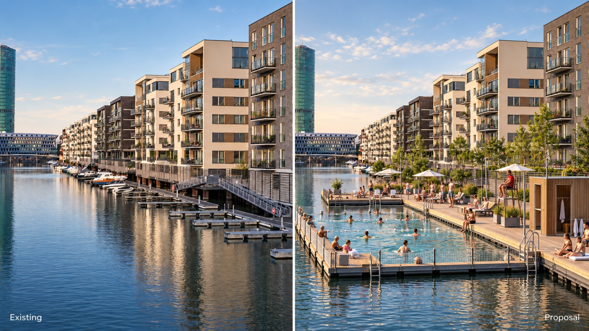
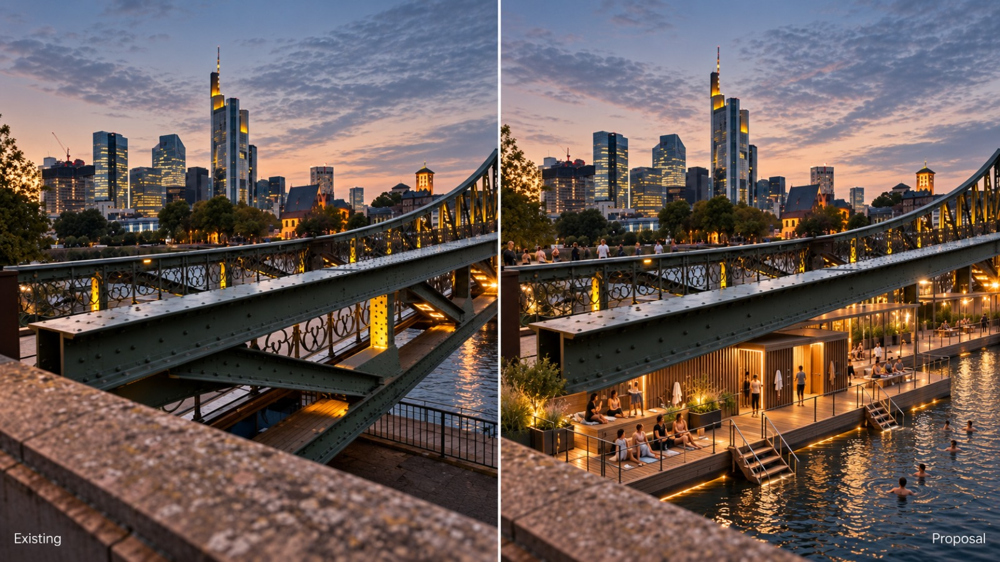
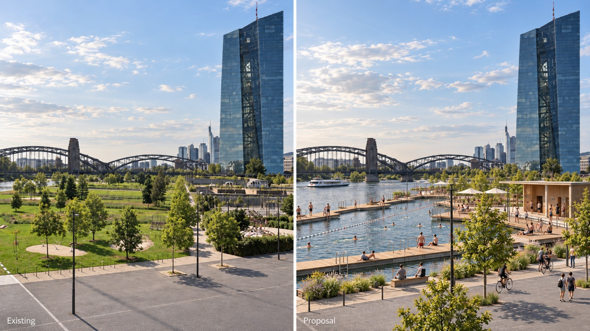

Frankfurt hatte einmal 29 Flussbäder. Das größte Flussbad Deutschlands stand am Nizza. Heute steht am Ufer ein Badeverbot seit 1953
Wir holen die alten Bilder zurück — projiziert an die Wand am Main — und fordern: macht diesen Fluss wieder zum Gemeingut.
Was wir tun ↓Am Deutschherrnufer lag über ein Jahrhundert lang Badekultur. Männer, Frauen, Kinder, Arbeiterfamilien: alle sprangen in den Main. Urlaub mitten in der Stadt, für alle bezahlbar. Wir wollen die Stadt daran erinnern, dass diese Lebensqualität zurückholbar ist.
Macht Frankfurt wieder schwimmen.
Flussbäder gab es in den 1910er-Jahren am Main. Frankfurt badete in seinem Fluss.
Größtes Flussbad Deutschlands am Nizza — Schwimmen, Tennis, Turnen, Restauration.
Badeverbot — seither ist der Main zum Durchfliessen da, nicht zum Leben.
Nach Einbruch der Dunkelheit projizieren wir historische Fotos der Frankfurter Flussbäder an die Seitenwand Wasserweg 8–10, bespielt vom Parkplatz Wasserweg 12–14. Direkt um die Ecke vom Deutschherrnufer. Im Loop: ein riesiger QR-Code, der hierher führt.
→ Mitmachen? Kommentar unten mit „BEAMER".
Mischkanalisation: bei Starkregen leiten rund 90 Überläufe mechanisch gereinigtes Mischwasser in den Fluss.
E. coli und Enterokokken überschreiten regelmässig die EU-Badegewässer-Werte.
Trübes Wasser, Schifffahrt, Strömung — Rettung schwer.
Baut grüne, lokale Gemeingüter, die funktionieren — statt teurer, schlecht gemachter Mega-Projekte und pauschaler Verbote. Fangt hier an. Am Main.
Echte historische Aufnahmen rund um den Main.
Historische Aufnahmen · Frankfurt am Main
Keine Nostalgie — Gegenwart. Dieselben Orte, heute: links, wie es ist. Rechts, wie es sein könnte. Vier Visualisierungen für ein Frankfurt, das wieder in seinem Fluss badet.






KI-Visualisierungen — links Bestand, rechts Vorschlag. Keine offizielle Planung.
→ Schematisches Rendering. Reale Fassadenmasse & Foto beim Ortstermin final.
Du hast den QR an der Wand gescannt? Unterschreibe die Petition — anonym reicht — und hinterlasse einen Kommentar: Was wünschst du dir?
…
Schwimmen am Main ist nur der Anfang. Jede Stadt hat einen abgesperrten Fluss, einen verrammelten Platz, eine zubetonierte Wiese — eine Idee, die allen gehören sollte. Trag deine hier ein: wir sammeln sie, und aus jeder Idee kann eine eigene Initiative mit eigener Petition werden.
Ein Gemeingut nach dem anderen.
…